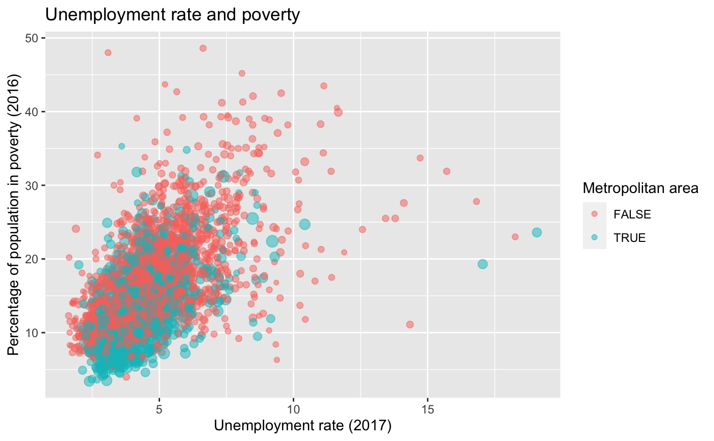

Data for 3143 counties in the United States.
county_complete
A data frame with 3143 observations on the following 111 variables.
State.
County name.
FIPS code.
2000 population.
2010 population.
2011 population.
2012 population.
2013 population.
2014 population.
2015 population.
2016 population.
2017 population.
Percent of population under 5 (2010).
Percent of population under 5 (2017).
Percent of population under 18 (2010).
Percent of population over 65 (2010).
Percent of population over 65 (2017).
Median age (2017).
Percent of population that is female (2010).
Percent of population that is white (2010).
Percent of population that is black (2010).
Percent of population that is black (2017).
Percent of population that is a Native American (2010).
Percent of population that is a Native American (2017).
Percent of population that is a Asian (2010).
Percent of population that is a Asian (2017).
Percent of population that is Hawaii or Pacific Islander (2010).
Percent of population that is Hawaii or Pacific Islander (2017).
Percent of population that identifies as another single race (2017).
Percent of population that identifies as two or more races (2010).
Percent of population that identifies as two or more races (2017).
Percent of population that is Hispanic (2010).
Percent of population that is Hispanic (2017).
Percent of population that is white and not Hispanic (2010).
Percent of population that is white and not Hispanic (2017).
Percent of population that speaks English only (2017).
Percent of population that has not moved in at least one year (2006-2010).
Percent of population that is foreign-born (2006-2010).
Percent of population that speaks a foreign language at home (2006-2010).
Birth rate for women ages 16 to 50 (2017).
Percent of population that is a high school graduate (2006-2010).
Percent of population that is a high school graduate (2012-2016).
Percent of population that is a high school graduate (2017).
Percent of population with some college education (2012-2016).
Percent of population with some college education (2017).
Percent of population that earned a bachelor's degree (2006-2010).
Percent of population that earned a bachelor's degree (2012-2016).
Percent of population that earned a bachelor's degree (2017).
Percent of population that are veterans (2006-2010).
Percent of population that are veterans (2017).
Mean travel time to work (2006-2010).
Mean travel time to work (2017).
Percent of population who has access to broadband (2017).
Percent of population who has access to a computer (2017).
Number of housing units (2010).
Homeownership rate (2006-2010).
Housing units in multi-unit structures (2006-2010).
Median value of owner-occupied housing units (2006-2010).
Households (2006-2010).
Households (2017).
Persons per household (2006-2010).
Persons per household (2017).
Per capita money income in past 12 months (2010 dollars, 2006-2010)
Per capita money income in past 12 months (2017 dollars, 2017)
Whether the county contained a metropolitan area in 2013.
Median household income (2006-2010).
Median household income (2012-2016).
Median household income (2017).
Private nonfarm establishments (2009).
Private nonfarm employment (2009).
Private nonfarm employment, percent change from 2000 to 2009.
Nonemployer establishments (2009).
Total number of firms (2007).
Black-owned firms, percent (2007).
Native American-owned firms, percent (2007).
Asian-owned firms, percent (2007).
Native Hawaiian and other Pacific Islander-owned firms, percent (2007).
Hispanic-owned firms, percent (2007).
Women-owned firms, percent (2007).
Manufacturer shipments, 2007 ($1000).
Merchange wholesaler sales, 2007 ($1000).
Retail sales, 2007 ($1000).
Retail sales per capita, 2007.
Accommodation and food services sales, 2007 ($1000).
Building permits (2010).
Federal spending, in thousands of dollars (2009).
Land area in square miles (2010).
Persons per square mile (2010).
Describes whether the type of county-level smoking ban in place in 2010, taking one of the values "none", "partial", or "comprehensive".
Percent of population below poverty level (2006-2010).
Percent of population below poverty level (2012-2016).
Percent of population below poverty level (2017).
Percent of population under age 5 below poverty level (2017).
Percent of population under age 18 below poverty level (2017).
Civilian labor force in 2007.
Number of civilians employed in 2007.
Number of civilians unemployed in 2007.
Unemployment rate in 2007.
Civilian labor force in 2008.
Number of civilians employed in 2008.
Number of civilians unemployed in 2008.
Unemployment rate in 2008.
Civilian labor force in 2009.
Number of civilians employed in 2009.
Number of civilians unemployed in 2009.
Unemployment rate in 2009.
Civilian labor force in 2010.
Number of civilians employed in 2010.
Number of civilians unemployed in 2010.
Unemployment rate in 2010.
Civilian labor force in 2011.
Number of civilians employed in 2011.
Number of civilians unemployed in 2011.
Unemployment rate in 2011.
Civilian labor force in 2012.
Number of civilians employed in 2012.
Number of civilians unemployed in 2012.
Unemployment rate in 2012.
Civilian labor force in 2013.
Number of civilians employed in 2013.
Number of civilians unemployed in 2013.
Unemployment rate in 2013.
Civilian labor force in 2014.
Number of civilians employed in 2014.
Number of civilians unemployed in 2014.
Unemployment rate in 2014.
Civilian labor force in 2015.
Number of civilians employed in 2015.
Number of civilians unemployed in 2015.
Unemployment rate in 2015.
Civilian labor force in 2016.
Number of civilians employed in 2016.
Number of civilians unemployed in 2016.
Unemployment rate in 2016.
Percent of poopulation who are uninsured (2017).
Percent of poopulation under 6 who are uninsured (2017).
Percent of poopulation under 19 who are uninsured (2017).
Percent of poopulation under 74 who are uninsured (2017).
Civilian labor force in 2017.
Number of civilians employed in 2017.
Number of civilians unemployed in 2017.
Unemployment rate in 2017.
The data prior to 2011 was from http://census.gov, though the exact page it came from is no longer available.
More recent data comes from the following sources.
Download links for spreadsheets were found on https://www.ers.usda.gov/data-products/county-level-data-sets/download-data
Unemployment - Bureau of Labor Statistics - LAUS data - https://www.bls.gov/lau.
Median Household Income - Census Bureau - SAIPE data - https://www.census.gov/did/www/saipe.
The original data table was prepared by USDA, Economic Research Service.
Census Bureau.
2012-16 American Community Survey 5-yr average.
The original data table was prepared by USDA, Economic Research Service.
Tim Parker (tparker at ers.usda.gov) is the contact for much of the new data incorporated into this data set.
library(dplyr) library(ggplot2) county_complete %>% mutate( pop_change = 100 * ((pop2017 / pop2013) - 1), metro_area = if_else(metro_2013 == 1, TRUE, FALSE) ) %>% ggplot(aes(x = poverty_2016, y = pop_change, color = metro_area, size = sqrt(pop2017) / 1e3)) + geom_point(alpha = 0.5) + scale_color_discrete(na.translate = FALSE) + guides(size = FALSE) + labs( x = "Percentage of population in poverty (2016)", y = "Percentage population change between 2013 to 2017", color = "Metropolitan area", title = "Population change and poverty" )#> Warning: Removed 6 rows containing missing values (geom_point).# Counties with high population change county_complete %>% mutate(pop_change = 100 * ((pop2017 / pop2013) - 1)) %>% filter(pop_change < -10 | pop_change > 25) %>% select(state, name, fips, pop_change)#> # A tibble: 10 x 4 #> state name fips pop_change #> <chr> <chr> <dbl> <dbl> #> 1 Colorado Kit Carson County 8063 -13.1 #> 2 Georgia Chattahoochee County 13053 -15.5 #> 3 Illinois Alexander County 17003 -12.7 #> 4 Kansas Morton County 20129 -12.2 #> 5 North Dakota McKenzie County 38053 37.2 #> 6 Tennessee Trousdale County 47169 29.3 #> 7 Texas Concho County 48095 -33.6 #> 8 Texas Hudspeth County 48229 32.1 #> 9 Texas Loving County 48301 26.4 #> 10 West Virginia McDowell County 54047 -11.7# Population by metro area county_complete %>% mutate(metro_area = if_else(metro_2013 == 1, TRUE, FALSE)) %>% filter(!is.na(metro_area)) %>% ggplot(aes(x = metro_area, y = log(pop2017))) + geom_violin() + labs( x = "Metro area", y = "Log of population in 2017", title = "Population by metro area" )#> Warning: Removed 3 rows containing non-finite values (stat_ydensity).# Poverty and median household income county_complete %>% mutate(metro_area = if_else(metro_2013 == 1, TRUE, FALSE)) %>% ggplot(aes(x = poverty_2016, y = median_household_income_2016, color = metro_area, size = sqrt(pop2017) / 1e3)) + geom_point(alpha = 0.5) + scale_color_discrete(na.translate = FALSE) + guides(size = FALSE) + labs( x = "Percentage of population in poverty (2016)", y = "Median household income (2016)", color = "Metropolitan area", title = "Poverty and median household income" )#> Warning: Removed 6 rows containing missing values (geom_point).# Unemployment rate and poverty county_complete %>% mutate(metro_area = if_else(metro_2013 == 1, TRUE, FALSE)) %>% ggplot(aes(x = unemployment_rate_2017, y = poverty_2016, color = metro_area, size = sqrt(pop2017) / 1e3)) + geom_point(alpha = 0.5) + scale_color_discrete(na.translate = FALSE) + guides(size = FALSE) + labs( x = "Unemployment rate (2017)", y = "Percentage of population in poverty (2016)", color = "Metropolitan area", title = "Unemployment rate and poverty" )#> Warning: Removed 6 rows containing missing values (geom_point).